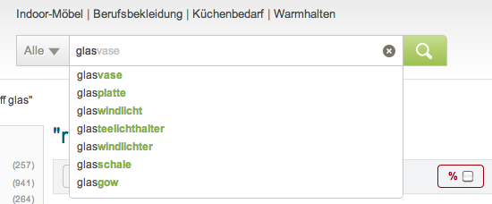
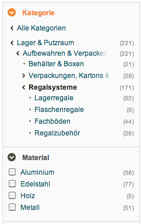
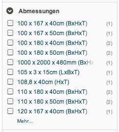
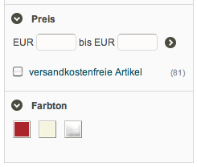
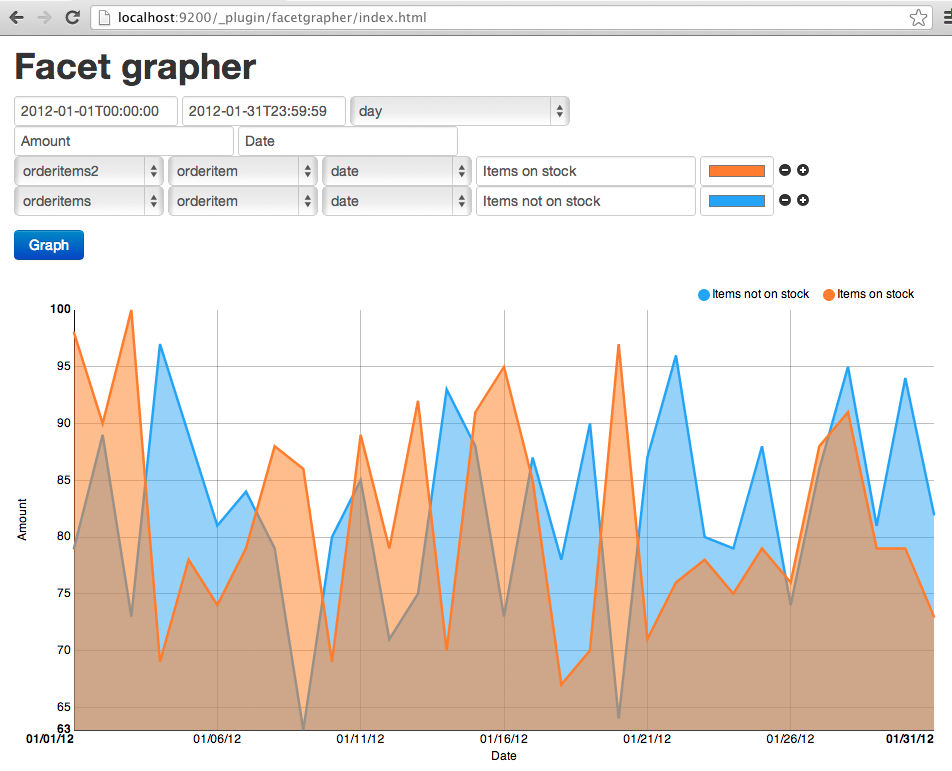
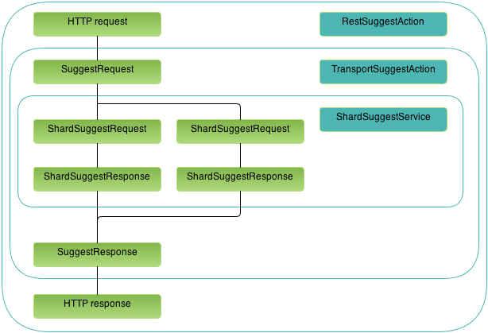
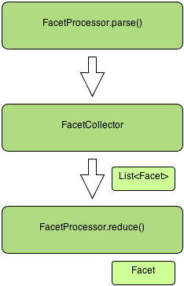

Pluggable architecture under the hood
Not affiliated with elasticsearch.org or elasticsearch.com
~# whoami
~# whoami
Alexander Reelsen, almost 30, random developer
Likes: Elasticsearch, dropwizard, simple java web frameworks
Likes: Document stores, scaling web architectures
Wrote: Playframework cookbook
Day job: Software Engineer @ Lusini.de
Sports: Basketball, Badminton
Agenda
- What is so important about search?
- Elasticsearch high level overview
- Configuration, Mapping & Analyzers
- Sharding, Replication
- Querying, Facetting & Percolation
- Plugins
Agenda
Walking through the FST suggester plugin
- Plugin setup, request workflow
- REST endpoint
- Client integration
- Shardservice, Node Service
- Refreshing in-memory structures
- Lifecycle listeners
- Testing, Plugin assembly
Agenda
Implementing own plugins
- Facets
- Rivers: JSON streaming river
- Analyzers: Morphologic analyzer
- Other plugins, drivers
Search is hard
Functional requirements
Find the right things (effectivity)
Find the right things (effectivity)
Non-functional requirements
Find the things right (efficiency)
No efficiency without effectivity
Term search
Id search
Search by color
Search by brand
Suggestions
Corrections
Prerequisites
Elasticsearch - birds eye view
- Schema-free, REST and JSON based, document store (having extra-ordinary search capabilites)
- Multi-tenancy, distributed (sharding, replication)
- Facetting, highlighting, custom scripting & scoring
- Language specific drivers
- Highly extensible via plugins
- Zero configuration
Zero configuration - I kid U not!
~# wget --no-check-certificate https://github.com/downloads/elasticsearch/elasticsearch/elasticsearch-0.19.11.zip
~# unzip elasticsearch-0.19.11.zip
~# cd elasticsearch-0.19.11
~# bin/elasticsearch -f
~# curl -X PUT http://localhost:9200/products/product/1 -d '{ "name" : "high quality search engine" }'
{"ok":true,"_index":"products","_type":"product","_id":"1","_version":1}
Zero configuration - I kid U not!
~# curl -X POST http://localhost:9200/products/product/_search?pretty=1 -d '{ "query" : { "term" : { "name" : "search" }} }'
{
"took" : 2, "timed_out" : false,
"_shards" : {
"total" : 5, "successful" : 5, "failed" : 0
},
"hits" : {
"total" : 1, "max_score" : 0.15342641,
"hits" : [ {
"_index" : "products", "_type" : "product", "_id" : "1",
"_score" : 0.15342641, "_source" : { "name" : "high quality search engine" }
} ]
}
}
Configuration
config/elasticsearch.jsonorconfig/elasticsearch.yml- Application-wide settings (zen discovery, available analyzers)
- Index default configurations (number of shards)
- Seperate logging file: config/logging.yml (simplified log4)
Configuration sample
discovery.zen.multicast.enabled: false
http:
max_content_length: 100000
index:
number_of_shards: 1
analysis:
analyzer:
default:
type: standard
lowercase_analyzer:
type: custom
tokenizer: standard
filter: [standard, lowercase]
Mapping
- JSON data is parsed on indexing
- Mapping is done on first field indexing
- Inferred if not configured (dangerous!)
- Types: float, long, boolean, date (+formatting), object, nested
- String type can have arbitrary analyzers
- Fields can be split up in more fields
Sample mapping
{
"product": {
"properties": {
"ProductId": { "type": "string", "index": "not_analyzed" },
"ProductEnabled": { "type": "boolean" },
"PiecesIncluded": { "type": "long" },
"Price": { "type": "float" },
"LastModified": { "type": "date", "format": "yyyy-MM-dd HH:mm:ss.SSS" },
"ProductName" : {
"type" : "multi_field",
"include_in_all" : true,
"fields" : {
"ProductName": { "type": "string", "index": "not_analyzed" },
"lowercase": { "type": "string", "analyzer": "lowercase_analyzer" },
"suggest" : { "type": "string", "analyzer": "suggest_analyzer" }
}
}
}
}
}Analyzers
- An analyzer consists of a tokenizer and an arbitrary amount of filters
- Example:
suggest_analyzer:
type: custom
tokenizer: whitespace
filter: [standard, lowercase, shingle]char_filter: html_stripIndices - birds eye view
- Dataset ready to execute searches in
- An index consists of arbitrary amount of shards
- An index can span over arbitrary amount of nodes
- One shard is mapped to one lucene index
Sharding
~# curl -X PUT localhost:9200/products -d '{ "settings" : { "index" : { "number_of_shards" : "5", "number_of_replicas" : "0" } } }'
Replication
~# curl -X PUT localhost:9200/products -d '{ "settings" : { "index" : { "number_of_shards" : "1", "number_of_replicas" : "1" } } }'Sharding & Replication
~# curl -X PUT localhost:9200/products -d '{ "settings" : { "index" : { "number_of_shards" : "5", "number_of_replicas" : "1" } } }'Querying
- Search/Count queries (term query, prefix query, id, fuzzy...)
- Geo-based queries, TTL
- More like this, Highlighting
- Facetting, Percolation, Scripting
Search - Facetting
- Facetting adds aggregated information to a standard search query
- Term: Group results by a term
- Range: Group by price or date ranges
- Histogram: Group results in equally sized buckets, also as date histogram
- Statistical: Include statistical data like min, max, sum, avg & some more
- Geo distance: Group results around a coordinate
Search - Facetting
  Search - Scripting
This is where your own integration beats all others
- Score down all your products without an image
- Score up products by an attribute like its product quality or stock
- Change score depending on the age of the product (score higher if auction ends today)
- Apply math operations on fields to change score
Search API - Percolation
Implement a price agent for free!
curl -X PUT localhost:9200/_percolator/products/pricecheck -d '{
"query" : {
"bool" : {
"must" : { "term" : { "name" : "MacBook Air" } },
"must" : { "range" : { "price" : { "from" : 200, "to" : 999 } } }
}
}
}'
{"ok":true,"_index":"_percolator","_type":"products","_id":"pricecheck","_version":1}
Search API - Percolation
curl -X PUT 'localhost:9200/products/product/1?percolate=*' -d '{ "price": 1000, "name" : "MacBook Air" }'
{"ok":true,"_index":"products","_type":"product","_id":"1","_version":1,"matches":[ ]}
curl -X PUT 'localhost:9200/products/product/2?percolate=*' -d '{ "price": 999, "name" : "MacBook Air" }'
{"ok":true,"_index":"products","_type":"product","_id":"2","_version":1,"matches":["pricecheck"]}
Executing a query
Settings settings = ImmutableSettings.settingsBuilder().put("node.client", true).build();
InetSocketTransportAddress address = new InetSocketTransportAddress("localhost", 9300);
TransportClient client = new TransportClient(settings).addTransportAddress(address);
SearchRequest searchRequest = new SearchRequest("products");
searchRequest.source(new SearchSourceBuilder(termQuery("field", "search")))
searchRequest.types("product")
ActionFuture<SearchResponse> response = client.searchRequest(searchRequest);
Request builders
SearchRequestBuilder builder = new SearchRequestBuilder(client)
.setIndices("products")
.setTypes("product")
.setQuery(QueryBuilders.termQuery("name", "foo"))
.execute()
.actionGet()
Going async
SearchRequestBuilder builder = new SearchRequestBuilder(node.client())
.setIndices("products")
.setTypes("product")
.setQuery(QueryBuilders.termQuery("name", "foo"))
.execute(new ActionListener<SearchResponse>() {
public void onResponse(SearchResponse searchResponse) {
// ...
}
public void onFailure(Throwable e) {
// ...
}
});Google Guice - Modules
public class BillingModule extends AbstractModule {
@Override
protected void configure() {
bind(TransactionLog.class).to(DatabaseTransactionLog.class);
bind(CreditCardProcessor.class).to(PaypalCreditCardProcessor.class);
bind(BillingService.class).to(RealBillingService.class);
}
}Google Guice - @Inject
public class RealBillingService implements BillingService {
private final CreditCardProcessor processor;
private final TransactionLog transactionLog;
@Inject
public RealBillingService(CreditCardProcessor processor,
TransactionLog transactionLog) {
this.processor = processor;
this.transactionLog = transactionLog;
}
// ...
}
Google Guice - Injector
public class App {
public static void main(String[] args) {
Injector injector = Guice.createInjector(new BillingModule());
BillingService billingService = injector.getInstance(BillingService.class);
...
}
}
Elasticsearch - Guice 101
ModulesBuilder modules = new ModulesBuilder();
modules.add(new RestModule(settings));
// modules.add(AnyModule.class);
Injector injector = modules.createInjector();
Client client = injector.getInstance(Client.class);
- ModuleBuilder: Node, TransportClient, Index, IndexShard and River
Plugins
- Extending anything: Analyzers, rivers, transport, facets, mapping types, discovery, scripting, lucene functionality
- Many plugins available
- Site plugin: Statically serving assets
bin/plugin -install spinscale/elasticsearch-facetgrapherSite plugins
Plugins
On application start up, PluginsService scans for all es-plugin.properties files.
plugin=org.elasticsearch.plugin.suggest.SuggestPluginPlugins
public class SuggestPlugin extends AbstractPlugin {
public String name() {
return "suggest";
}
public String description() {
return "Suggest Plugin";
}
public void onModule(RestModule restModule) {
restModule.addRestAction(RestSuggestAction.class);
}
}
Plugins
Collection<Class<? extends Module>> modules() {}
Collection<Class<? extends Module>> indexModules() {}
Collection<Class<? extends Module>> shardModules() {}
Collection<Class<? extends LifecycleComponent>> services() {}
Collection<Class<? extends LifecycleComponent>> indexServices() {}
Collection<Class<? extends LifecycleComponent>> shardServices() {}
public void processModule(Module module) {}
FST Suggester plugin
- FST - Finite state automata, see this presentation
- Allow auto completion via FSTCompletionLookup
- In-memory structure (per IndexReader)
- Concurrent updates do not perform
- Solution: async updates
Simplified execution flow
Defining REST endpoints
public class RestSuggestAction extends BaseRestHandler {
@Inject
public RestSuggestAction(Settings settings, Client client, RestController controller) {
super(settings, client);
controller.registerHandler(POST, "/{index}/_suggest", this);
controller.registerHandler(POST, "/{index}/{type}/_suggest", this);
}
public void handleRequest(final RestRequest request, final RestChannel channel) {
// execute async request code here
}
}
Executing suggest request
client.execute(SuggestAction.INSTANCE, suggestRequest, new ActionListener() {
public void onResponse(SuggestResponse response) {
try {
// create JSON response of SuggestResponse
channel.sendResponse(new XContentRestResponse(request, OK, builder));
} catch (Exception e) {
onFailure(e);
}
}
public void onFailure(Throwable e) {
// return HTTP error message ...
}
});
Shard service
public class ShardSuggestService extends AbstractIndexShardComponent {
@Inject
public ShardSuggestService(ShardId shardId, @IndexSettings Settings indexSettings, IndexShard indexShard) {
// ...
}
public ShardSuggestResponse suggest(ShardSuggestRequest shardSuggestRequest) {}
public void update() {}
public ShardSuggestRefreshResponse refresh(ShardSuggestRefreshRequest shardSuggestRefreshRequest) {}
public void shutDown() {}
}Node Services
public class SuggestService extends AbstractLifecycleComponent {
@Inject
public SuggestService(Settings settings, TransportSuggestRefreshAction suggestRefreshAction, ClusterService clusterService, IndicesService indicesService) {
}
protected void doStart() throws ElasticSearchException {
// start thread which periodically sends refresh suggest request
suggestUpdaterThread = EsExecutors.daemonThreadFactory(settings, "suggest_updater").newThread(new SuggestUpdaterThread());
suggestUpdaterThread.start();
}
} SuggestRefresh
Quiz: Why is this code necessary?public class SuggestUpdaterThread implements Runnable {
public void run() {
while (!closed) {
DiscoveryNode node = clusterService.localNode();
boolean isClusterStarted = clusterService.lifecycleState().equals(Lifecycle.State.STARTED);
if (isClusterStarted && node != null && node.isMasterNode()) {
suggestRefreshAction.execute(new SuggestRefreshRequest()).actionGet();
}
// sleep until next run here
}
}
}
Lifecycle listener
Freeing up resources on shard deletion/cluster move (and index close)indicesService.indicesLifecycle().addListener(
new IndicesLifecycle.Listener() {
public void beforeIndexShardClosed(ShardId shardId, @Nullable IndexShard indexShard, boolean delete) {
IndexService indexService = indicesService.indexService(shardId.index().name());
if (indexService != null) {
ShardSuggestService suggestShardService = indexService.shardInjectorSafe(shardId.id()).getInstance(ShardSuggestService.class);
suggestShardService.shutDown();
}
}
});
TransportClient
Problem: Suggestions should work on clients, without having a node running in the same JVM try to start up server functionalitypublic class SuggestPlugin extends AbstractPlugin {
public Collection<Class<? extends Module>> modules() {
Collection<Class<? extends Module>> modules = Lists.newArrayList();
if (isClient()) {
modules.add(SuggestClientModule.class);
} else {
modules.add(SuggestModule.class);
}
return modules;
}
}
Testing
AbstractSuggestTest: Defines all tests, and amount of nodes running for tests (so clustered environment is also tested)- Abstract methods:
getSuggestions()and refreshing suggesters (all, per-index, per-field) RestSuggestActionTest, TransportClientTest, TransportSuggestActionTest, SuggestBuildersTest- Hint: Start up nodes in parallel for speedup
Plugin assembly
- maven assembly plugin is used to create a zip file
- Hooks up in the
packagelifecycle - zip file includes
mvn packagecreated jar- dependencies from
compilescope
- zip file excludes the
org.elasticsearch:elasticsearchdependency
Facets
Implement own facet types to
- ... be faster
- ... save memory
- ... be more flexible
- ... save post processing work
Samples
- Approximately date facets using stream-lib. See the presentation.
Counts over 1 million distinct items in 80kb of memory to be accurate within 1% of true value
- Lovely systems facet plugins
- Lettercount plugin, plus presentation
- Script facet plugin
Implementation
- Plugins adds a
FacetProcessorin theFacetModule - Concrete facet processor implements
FacetProcessor - Concrete Facet implements
InternalFacet - Concrete facet collector extends
AbstractFacetCollector
Workflow
FacetProcessorparses possible request options, createsFacetCollectorFacetCollectoroperates per shard, gets docids from matched query, looks up doc values in the fieldCache and emits aFacetFacetProcessorgets aList<Facet>, merges it to oneFacet- One Facet is returned as facet data
Workflow
Idea
- A geo region facet type
- Allows you to define arbitrary non-overlapping geo polygons as regions
- Facet groups results into these regions
- Would allow you to cluster/facet by country/state
- Saves classical pre/post processing work
- Could easily be done by a term facet, if region is added on indexing as string
Rivers
- Automatically pull data into elasticsearch
- Run only on a single node in the cluster
- CouchDB, RabbitMQ, Twitter, wikipedia, RSS, MongoDB, JDBC, LDAP, ActiveMQ, Confluence, Solr, JSON, St9, MySQL, OAI, AWS SQS, Filesystem, Dropbox
curl -XPUT 'localhost:9200/_river/my_river/_meta' -d '{
"type" : "dummy",
"config" : {
"user" : "foo",
"password" : "bar"
}
}'JSON streaming
- Imports/Deletes JSON data
- Makes bulk requests
- Prevents going OOM due to execute indexing requests regularly
- Really streams data via HTTP
- Tries to fetch incremental updates
Implementation
public class JsonRiverPlugin extends AbstractPlugin {
public String name() {
return "json";
}
public String description() {
return "River Streaming JSON Plugin";
}
public void onModule(RiversModule module) {
module.registerRiver("json", JsonRiverModule.class);
}
}
JsonRiverModule
public class JsonRiverModule extends AbstractModule {
protected void configure() {
bind(River.class).to(JsonRiver.class).asEagerSingleton();
}
}
JsonRiver
public class JsonRiver extends AbstractRiverComponent implements River {
private volatile Thread slurperThread;
private volatile Thread indexerThread;
private final TransferQueue<RiverProduct> stream = new LinkedTransferQueue<RiverProduct>();
}
Slurper
class Slurper implements Runnable {
public void run() {
RiverImporter importer = new RiverImporter("URL", stream);
while (!closed) {
String lastIndexUpdate = getLastUpdatedTimestamp();
RiverProductImport result = importer.executeImport(lastIndexUpdate);
storeLastUpdatedTimestamp(result.exportTimestamp);
try {
Thread.sleep(RIVER_REFRESH_INTERVAL.getMillis());
} catch (InterruptedException e1) {}
}
}
}
Indexer
private class Indexer implements Runnable {
public void run() {
while (!closed) {
try {
RiverProduct product = stream.take();
bulk = client.prepareBulk();
do {
addProductToBulkRequest(product);
} while ((product = stream.poll(250, TimeUnit.MILLISECONDS)) != null && deletedDocuments + insertedDocuments < RIVER_MAX_BULK_SIZE);
} finally {
bulk.execute().actionGet();
}
}
}
}
Analyzers
- Extend elasticsearch with existing lucene analyzers
- Lots of analyzers: ICU, SmartCN, Phonetic, Stempel, Kuromoji, Decompounder, Combo, NaturalSort, SKOS, Hunspell, IK, MMSEG, Pinyin, Morphology, Paoding, Morfologik, Korean, Korean 2, Japanese, greeklish
- Attention: Not all analyzers are maintained
Morphologic
public class AnalysisMorphologyPlugin extends AbstractPlugin {
public String name() {
return "analysis-morphology";
}
public String description() {
return "Morphology analysis support";
}
public void onModule(AnalysisModule module) {
module.addProcessor(new MorphologyAnalysisBinderProcessor());
}
}BinderProcessor
public class MorphologyAnalysisBinderProcessor extends AnalysisModule.AnalysisBinderProcessor {
public void processAnalyzers(AnalyzersBindings analyzersBindings) {
analyzersBindings.processAnalyzer("english_morphology", EnglishMorphologyAnalyzerProvider.class);
}
public void processTokenFilters(TokenFiltersBindings tokenFiltersBindings) {
tokenFiltersBindings.processTokenFilter("english_morphology", EnglishMorphologyTokenFilterFactory.class);
}
}AnalyzerProvider
public class EnglishMorphologyAnalyzerProvider extends AbstractIndexAnalyzerProvider<MorphologyAnalyzer> {
private final MorphologyAnalyzer analyzer;
@Inject
public EnglishMorphologyAnalyzerProvider(...) {
super(index, indexSettings, name, settings);
try {
analyzer = new EnglishAnalyzer();
} catch (IOException ex) { /* ... */ }
}
public MorphologyAnalyzer get() {
return this.analyzer;
}
}TokenFilterFactory
public class EnglishMorphologyTokenFilterFactory extends AbstractTokenFilterFactory {
private final LuceneMorphology luceneMorph;
@Inject
public EnglishMorphologyTokenFilterFactory(...) {
super(index, indexSettings, name, settings);
try {
luceneMorph = new EnglishLuceneMorphology();
} catch (IOException ex) { /* ... */ }
}
public TokenStream create(TokenStream tokenStream) {
return new MorphologyFilter(tokenStream, luceneMorph);
}
}Transport plugins
Other plugins
- Scripting plugins: python, JavaScript, Groovy, Ruby, Scala, and of course native scripts
- Site plugins: BigDesk, Paramedic, Facetgrapher, Elasticsearch Head
- Misc plugins: Mapper, Hadoop, AWS Cloud, Zookeeper, FST suggester, reindex, change tracking, partial update, Mock Solr, knapsack, langdetect, index term list, skywalker
Drivers & Integrations
- Drivers & integrations: Official elasticsearch page, CakePHP, Mongoose
- Monitoring: Server Density, collectd, Munin gists, Nagios, Munin
- Sysadmins: starcluster, MCollective
Soon...
- Lucene 4.0 migration is ongoing
- Result grouping (#256)
- More native autocomplete (AnalyzingSuggester in Lucene 4.1)
- No public roadmap right now
Done
- Questions?
- Critics?
- Tips?
Books
- Sorry, no elasticsearch book yet...
- Lucene in Action (pre 4.0)
- Taming Text
- Introduction to Information Retrieval
- Modern information retrieval
Links & acknowledgements
- Hakim El Hattab for reveal.js
- The whole elasticsearch team
- Creating a pluggable REST endpoint
- Solr vs. elasticsearch comparison, part 1, 2, 3, 4, 5
- How to write a simple plugin
- All the elasticsearch plugin authors